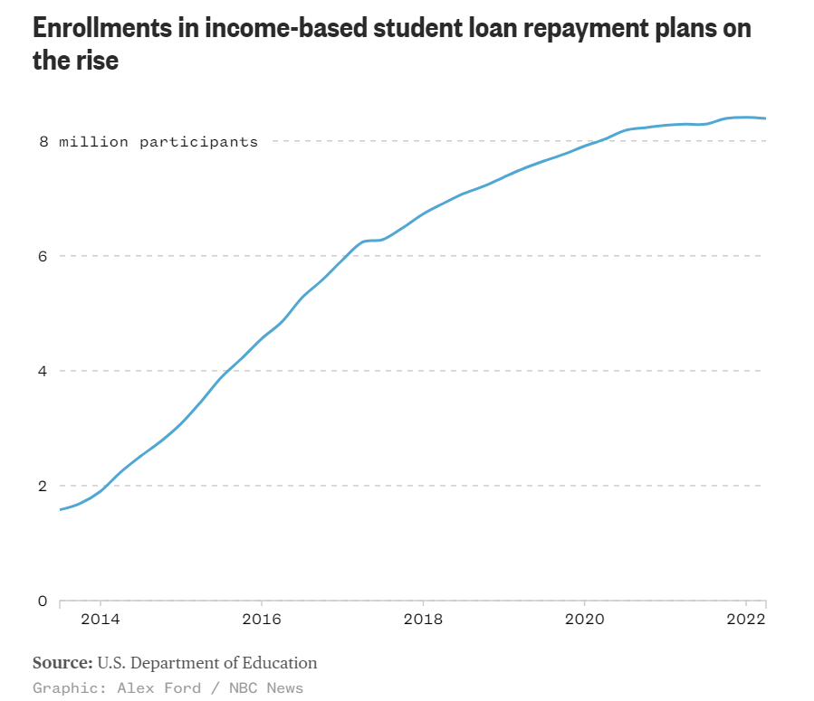

College is increasingly becoming more unaffordable and inaccessible to people. Today, student loans are being taken out more than every, impacting people nationwide. Student debt is a burden that is affecting student's financial well-being and limiting their oppertunities for savings and investments. This map allows you to explore the varying amounts that people take out in student loans in each state. Hover over a state to view the exact amount of student loans per person, or click a state to zoom in. 